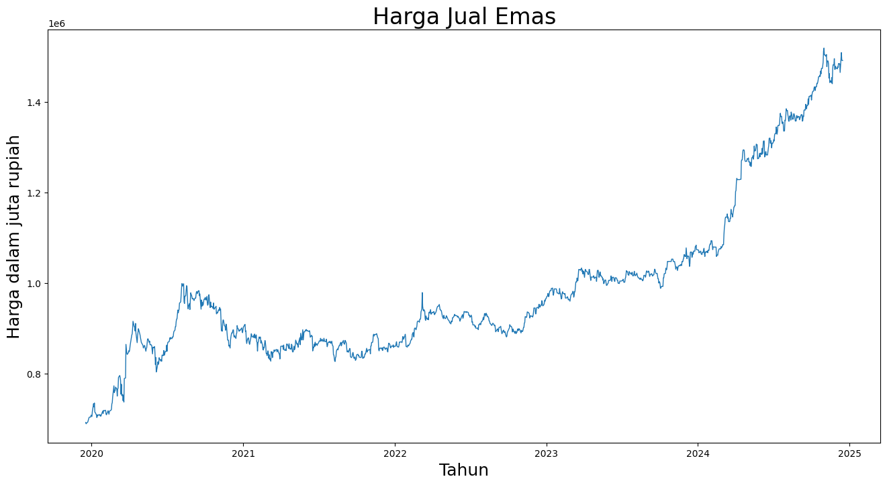
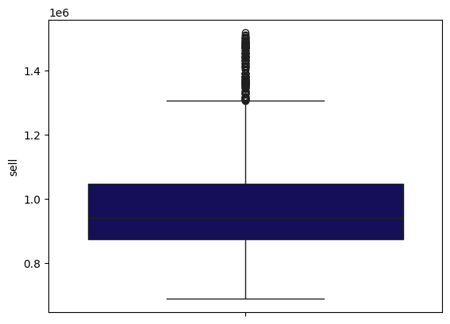
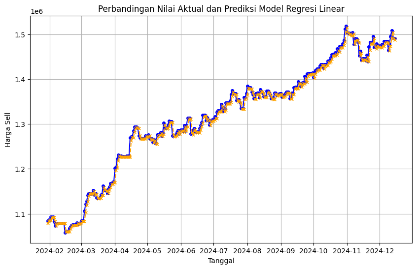
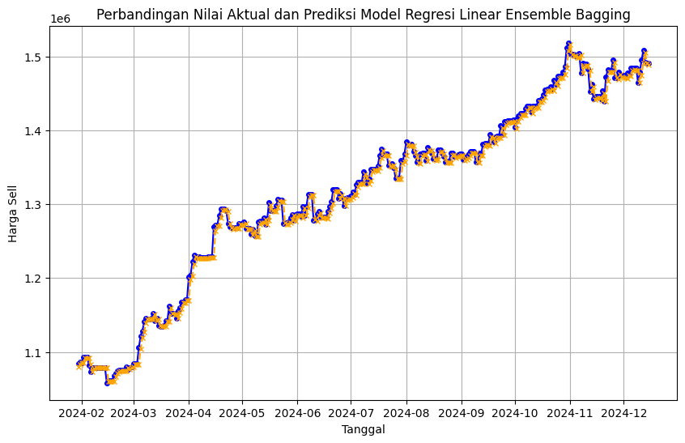
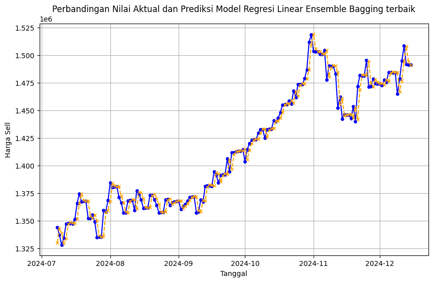

Laporan Proyek Sains Data 2#
Pendahuluan#
Latar Belakang#
Emas merupakan salah satu komoditas yang memiliki peran penting dalam perekonomian global. Selain digunakan sebagai alat investasi yang stabil, emas juga digunakan dalam berbagai industri, seperti perhiasan, elektronik, dan kesehatan. Fluktuasi harga emas sering kali dipengaruhi oleh berbagai faktor, termasuk kondisi pasar global, nilai tukar mata uang, tingkat inflasi, dan situasi geopolitik. Oleh karena itu, kemampuan untuk memprediksi harga emas menjadi sangat penting, terutama bagi para investor, perusahaan, dan institusi keuangan dalam mengambil keputusan strategis.
Investasi emas telah menjadi salah satu pilihan populer di Indonesia karena stabilitas nilai emas dalam jangka panjang. Untuk mendukung pengambilan keputusan dalam investasi emas, diperlukan model prediksi yang mampu memperkirakan harga emas berdasarkan data historis.
Masalah#
Fluktuasi harga emas yang dipengaruhi oleh banyak faktor sering kali membuat investor kesulitan untuk memprediksi perubahan harga emas secara akurat. Ketidaktepatan dalam memprediksi harga emas dapat menyebabkan keputusan investasi yang kurang optimal. Selain itu, tidak semua investor memiliki akses terhadap alat prediksi berbasis teknologi yang mudah digunakan. Oleh karena itu, diperlukan model prediksi yang akurat dan berbasis data yang dapat membantu investor dalam mengambil keputusan.
Tujuan#
Tujuan dari proyek ini adalah:
Membuat model prediksi harga emas berbasis data historis.
Menghasilkan sebuah aplikasi sederhana yang dapat digunakan untuk memprediksi harga emas secara real-time.
Metodologi#
Memahami Data (Data Understanding)#
Pengumpulan Data#
Data historis emas didapatkan dari API Pluang yang terupdate secara realtime. Menggunakan data historis emas kurang lebih selama 5 tahun
Mengambil Data#
Mendapatkan data dari link API
#Get data from API link
import requests
import json
url = 'https://api-pluang.pluang.com/api/v3/asset/gold/pricing?daysLimit=1825' # Ganti dengan URL API kamu
response = requests.get(url)
if response.status_code == 200:
data = response.json()
print("Berhasil mengambil data. Status", response.status_code)
else:
print("Gagal mengambil data. Status:", response.status_code)
Berhasil mengambil data. Status 200
Membersihkan data dan mengubahnya ke dalam bentuk dataframe
#Clean JSON data
import pandas as pd
history_df = pd.json_normalize(data['data']['history'])
new_df = history_df[['updated_at', 'sell', 'buy']]
new_df['date'] = new_df['updated_at'].str.split('T').str[0]
temp_df = new_df[['date', 'sell', 'buy']]
temp_df.head()
C:\Users\atsuga\AppData\Local\Temp\ipykernel_12240\723975748.py:8: SettingWithCopyWarning:
A value is trying to be set on a copy of a slice from a DataFrame.
Try using .loc[row_indexer,col_indexer] = value instead
See the caveats in the documentation: https://pandas.pydata.org/pandas-docs/stable/user_guide/indexing.html#returning-a-view-versus-a-copy
new_df['date'] = new_df['updated_at'].str.split('T').str[0]
| date | sell | buy | |
|---|---|---|---|
| 0 | 2024-12-15 | 1491087 | 1453809 |
| 1 | 2024-12-14 | 1491087 | 1453809 |
| 2 | 2024-12-13 | 1491562 | 1454272 |
| 3 | 2024-12-12 | 1508511 | 1470798 |
| 4 | 2024-12-11 | 1494722 | 1457353 |
Deskripsi Data#
Data saham berupa csv berisikan 1606 baris dan 3 kolom yang merupakan :
Date : Tanggal harga emas yang berformat yyyy-mm-dd hh:mm:ss
Sell : Harga jual emas dalam Rupiah
Buy : Harga beli emas dalam Rupiah
Melihat tipe data dari masing masing kolom.
temp_df.info()
<class 'pandas.core.frame.DataFrame'>
RangeIndex: 1608 entries, 0 to 1607
Data columns (total 3 columns):
# Column Non-Null Count Dtype
--- ------ -------------- -----
0 date 1608 non-null object
1 sell 1608 non-null int64
2 buy 1608 non-null int64
dtypes: int64(2), object(1)
memory usage: 37.8+ KB
Terbaca bahwa dari 1606 baris data tiap kolomnya tidak ada baris yang kosong (null).
Eksplorasi Data#
Sebelum melanjutkan eksplorasi data, terlebih dahulu menjadikan kolom date atau tanggal sebagai index dari data agar memudahkan prosesnya, serta hanya menggunakan kolom sell atau harga jual karena hanya akan memprediksi harga jual emas berdasarkan data harga jual emas di hari hari sebelumnya.
df = temp_df[['date', 'sell']]
df['date'] = pd.to_datetime(df['date'], dayfirst=True, format='%Y-%m-%d').dt.date
df.set_index('date', inplace=True)
df.index = pd.to_datetime(df.index)
df = df.sort_index()
df.tail(10)
C:\Users\atsuga\AppData\Local\Temp\ipykernel_12240\1953931231.py:2: SettingWithCopyWarning:
A value is trying to be set on a copy of a slice from a DataFrame.
Try using .loc[row_indexer,col_indexer] = value instead
See the caveats in the documentation: https://pandas.pydata.org/pandas-docs/stable/user_guide/indexing.html#returning-a-view-versus-a-copy
df['date'] = pd.to_datetime(df['date'], dayfirst=True, format='%Y-%m-%d').dt.date
| sell | |
|---|---|
| date | |
| 2024-12-06 | 1484337 |
| 2024-12-07 | 1483925 |
| 2024-12-08 | 1483925 |
| 2024-12-09 | 1464711 |
| 2024-12-10 | 1478687 |
| 2024-12-11 | 1494722 |
| 2024-12-12 | 1508511 |
| 2024-12-13 | 1491562 |
| 2024-12-14 | 1491087 |
| 2024-12-15 | 1491087 |
Dengan menjadikan date atau tanggal sebagai index data, dapat memudahkan data untuk diplot
import matplotlib.pyplot as plt
import seaborn as sns
fig, ax1 = plt.subplots(figsize=(16, 8))
plt.title("Harga Jual Emas", fontsize=24)
plt.ylabel('Harga dalam juta rupiah', fontsize=18)
plt.xlabel('Tahun', fontsize=18)
sns.set_palette(["#090364", "#1960EF", "#EF5919"])
sns.lineplot(data=df['sell'], linewidth=1.0, dashes=False, ax=ax1)
plt.show()

Terlihat bahwa data jual emas relatif stabil dan naik dari tahun ke tahun, yang awalnya hanya berharga 800 ribuan di tahun 2020, hingga berharga kurang dari 1 juta 500 ribu diakhir tahun 2024. Selanjutnya melihat apakah data terdapat outlier
import numpy as np
sns.boxplot(df['sell'])
plt.show()

Terlihat jika terdapat banyak data yang terdeksi sebagai outlier, namun data tersebut tidak akan dihilangkan atau dinormalkan karena itu bukan data error dan data asli yang akan mempengaruhi prediksi jika data tersebut diubah. Karena data merupakan data univariate, maka tidak ada pengecekan korelasi antar fitur.
Verifikasi Kualitas Data#
Dapat disimpulkan bahwa data yang digunakan terbilang bagus dan cocok untuk dipakai dalam modelling, namun perlu diperhatikan bahwa data perlu masuk ke tahap preprocessing data agar data benar benar siap untuk masuk ke tahap modelling.
Pra-pemrosesan Data (Data Preprocessing)#
Normalisasi Data#
Melakukan scaling menggunakan Min-Max Scaling yaitu mengubah data sehingga semua nilai berada dalam rentang [0, 1] dengan rumus berikut
Di mana:
\(x'\) adalah nilai yang dinormalisasi.
\(x\) adalah nilai asli dari fitur.
\(\text{min}(X)\) adalah nilai minimum dari fitur dalam dataset.
\(\text{max}(X)\) adalah nilai maksimum dari fitur dalam dataset.
Min-Max Scaling berguna untuk meningkatkan kinerja model
import numpy as np
def normalize(df):
from sklearn.preprocessing import RobustScaler, MinMaxScaler
np_data_unscaled = np.array(df)
scaler = MinMaxScaler()
np_data_scaled = scaler.fit_transform(np_data_unscaled)
print(np_data_unscaled)
normalized_df = pd.DataFrame(np_data_scaled, columns=df.columns, index=df.index)
pd.set_option('display.float_format', '{:.4f}'.format) # Menampilkan 4 desimal
return normalized_df, scaler
normalized_df, scaler = normalize(df)
normalized_df
[[ 691578]
[ 688568]
[ 689974]
...
[1491562]
[1491087]
[1491087]]
| sell | |
|---|---|
| date | |
| 2019-12-18 | 0.0036 |
| 2019-12-19 | 0.0000 |
| 2019-12-20 | 0.0017 |
| 2019-12-23 | 0.0046 |
| 2019-12-26 | 0.0164 |
| ... | ... |
| 2024-12-11 | 0.9713 |
| 2024-12-12 | 0.9880 |
| 2024-12-13 | 0.9675 |
| 2024-12-14 | 0.9670 |
| 2024-12-15 | 0.9670 |
1608 rows × 1 columns
Terlihat bahwa data hanya bernilai dari angka 0 hingga 1 setelah dinormalisasi.
Sliding Window#
Untuk memprediksi harga emas hari esok, dibutuhkan data hari emas di hari ini, kemarin, dan 2 hari yang lalu. Sehingga dilakukan sliding window untuk menambahkan fitur atau kolom baru yang berisikan 3 hari data kemarin yang dibutuhkan untuk prediksi.
def sliding_window(data, lag):
series = data['sell']
result = pd.DataFrame()
for l in lag:
result[f'sell-{l}'] = series.shift(l)
result['sell'] = series[l:]
result = result.dropna()
result.index = series.index[l:] # Mengatur index sesuai dengan nilai lag
return result
windowed_data = sliding_window(normalized_df, [1, 2, 3])
windowed_data = windowed_data[['sell', 'sell-1', 'sell-2', 'sell-3']]
print(windowed_data)
sell sell-1 sell-2 sell-3
date
2019-12-23 0.0046 0.0017 0.0000 0.0036
2019-12-26 0.0164 0.0046 0.0017 0.0000
2019-12-27 0.0176 0.0164 0.0046 0.0017
2019-12-30 0.0180 0.0176 0.0164 0.0046
2019-12-31 0.0230 0.0180 0.0176 0.0164
... ... ... ... ...
2024-12-11 0.9713 0.9520 0.9352 0.9583
2024-12-12 0.9880 0.9713 0.9520 0.9352
2024-12-13 0.9675 0.9880 0.9713 0.9520
2024-12-14 0.9670 0.9675 0.9880 0.9713
2024-12-15 0.9670 0.9670 0.9675 0.9880
[1605 rows x 4 columns]
Splitting Data#
Sebelum masuk ke pemodelan, data dibagi terlebih dahulu. Data dibagi menjadi 2 yaitu 80% digunakan sebagai data train dan 20% sebagai data test. Dalam data train dan data test juga dibagi lagi menjadi data input yang berisikan data emas di 3 hari kemarin sebagai data prediksi dan data target yang merupakan data yang akan diprediksi. Hal ini dilakukan untuk mengetahui nilai error prediksi yang dihasilkan nanti.
def split_data(data, target, train_size):
split_index = int(len(data) * train_size)
x_train = data[:split_index]
y_train = target[:split_index]
x_test = data[split_index:]
y_test = target[split_index:]
return x_train, y_train, x_test, y_test
input_df = windowed_data[['sell-1', 'sell-2', 'sell-3']]
target_df = windowed_data[['sell']]
x_train, y_train, x_test, y_test = split_data(input_df, target_df, 0.8)
print("X_train shape:", x_train.shape)
print("y_train shape:", y_train.shape)
print("X_test shape:", x_test.shape)
print("y_test shape:", y_test.shape)
X_train shape: (1284, 3)
y_train shape: (1284, 1)
X_test shape: (321, 3)
y_test shape: (321, 1)
Modelling#
Terdapat beberapa skenario yang dilakukan untuk membandingkan nilai error yang dihasilkan dan memilih model dengan nilai error paling sedikit.
Regresi Linear tanpa Ensemble Bagging#
Rumus Regresi Linear#
Regresi linear dapat dinyatakan dengan rumus:
di mana:
\(y\) adalah variabel dependen (target).
\(\beta_0\) adalah intercept (konstanta).
\(\beta_1, \beta_2, \ldots, \beta_n\) adalah koefisien regresi untuk masing-masing variabel independen \(x_1, x_2, \ldots, x_n\).
\(\epsilon\) adalah error atau residual.
from sklearn.linear_model import LinearRegression
from sklearn.metrics import mean_squared_error, mean_absolute_percentage_error
linear_model = LinearRegression()
linear_model.fit(x_train, y_train)
LinearRegression()In a Jupyter environment, please rerun this cell to show the HTML representation or trust the notebook.
On GitHub, the HTML representation is unable to render, please try loading this page with nbviewer.org.
LinearRegression()
Metrik Evaluasi Model#
Metrik evaluasi model yang digunakan ada 3 yaitu : MSE, RMSE, dan MAPE
1. MSE (Mean Squared Error)#
Definisi: MSE adalah rata-rata dari kuadrat selisih antara nilai yang diprediksi dan nilai aktual.
Rumus:
\( \text{MSE} = \frac{1}{n} \sum_{i=1}^{n} (y_i - \hat{y}_i)^2 \)
Di mana \(y_i\) adalah nilai aktual, \(\hat{y}_i\) adalah nilai prediksi, dan \(n\) adalah jumlah data.
2. RMSE (Root Mean Squared Error)#
Definisi: RMSE adalah akar kuadrat dari MSE, yang mengembalikan satuan ke skala yang sama dengan data asli.
Rumus:
\( \text{RMSE} = \sqrt{\text{MSE}} \)
3. MAPE (Mean Absolute Percentage Error)#
Definisi: MAPE mengukur kesalahan dalam prediksi sebagai persentase dari nilai aktual.
Rumus:
\( \text{MAPE} = \frac{1}{n} \sum_{i=1}^{n} \left| \frac{y_i - \hat{y}_i}{y_i} \right| \times 100\% \)
# Melakukan prediksi
y_pred = linear_model.predict(x_test)
# Menghitung error
mse = mean_squared_error(y_test, y_pred)
rmse = np.sqrt(mse)
mape = mean_absolute_percentage_error(y_test, y_pred)
print("Mean Squared Error (MSE):", mse)
print("Root Mean Squared Error (RMSE):", rmse)
print("Mean Absolute Percentage Error (MAPE):", mape, " %")
Mean Squared Error (MSE): 0.00012779086400484612
Root Mean Squared Error (RMSE): 0.011304462128064569
Mean Absolute Percentage Error (MAPE): 0.010573123281715118 %
Skenario pertama dengan menggunakan model regresi linear biasa menghasilkan nilai error yang sangat kecil.
# Membuat grafik perbandingan
plt.figure(figsize=(10, 6))
plt.plot(y_test.index, scaler.inverse_transform(y_test.values.reshape(-1, 1)), label='Aktual', color='blue', marker='o', linestyle='-', markersize=4)
plt.plot(y_test.index, scaler.inverse_transform(y_pred.reshape(-1, 1)), label='Prediksi', color='orange', marker='x', linestyle='--', markersize=4)
plt.title('Perbandingan Nilai Aktual dan Prediksi Model Regresi Linear')
plt.xlabel('Tanggal')
plt.ylabel('Harga Sell')
plt.grid()
plt.show()

last_row = windowed_data.iloc[-1][['sell-1', 'sell-2', 'sell-3']].values.reshape(1, -1)
predicted_value_normalized = linear_model.predict(last_row)
predicted_value = scaler.inverse_transform(predicted_value_normalized.reshape(-1, 1))
last_price = scaler.inverse_transform(normalized_df[['sell']].iloc[-1].values.reshape(-1, 1))
percentage_change = ((predicted_value[0][0] - last_price[0][0]) / last_price[0][0]) * 100
if percentage_change > 0:
change_sign = '+'
else:
change_sign = ''
print(f'Harga emas hari ini: {last_price[0][0]}')
print(f'Prediksi harga emas untuk hari esok: {predicted_value[0][0]} ({change_sign}{percentage_change:.2f}%)')
Harga emas hari ini: 1491087.0
Prediksi harga emas untuk hari esok: 1487602.9521090707 (-0.23%)
C:\Users\atsuga\AppData\Local\Programs\Python\Python312\Lib\site-packages\sklearn\base.py:493: UserWarning: X does not have valid feature names, but LinearRegression was fitted with feature names
warnings.warn(
Regresi Linear dengan Ensemble Bagging#
Regresi Linear dengan Ensemble Bagging adalah pendekatan yang menggabungkan model regresi linear dengan teknik ensemble bagging untuk meningkatkan akurasi prediksi dan mengurangi variabilitas model.
Dalam regresi linear dengan bagging:
Data Sampling:
Dataset asli dipecah menjadi beberapa subset dengan teknik bootstrap.
Setiap subset berukuran sama dengan dataset asli tetapi mungkin memiliki data yang berulang.
Model Training:
Model regresi linear independen dilatih pada setiap subset.
Model Aggregation:
Hasil prediksi dari semua model diaggregasikan dengan rata-rata (averaging) untuk menghasilkan prediksi akhir.
from sklearn.ensemble import BaggingRegressor
base_model = LinearRegression()
bagging_model = BaggingRegressor(estimator=base_model, n_estimators=10, bootstrap=True)
bagging_model.fit(x_train, y_train)
y_pred = bagging_model.predict(x_test)
mse = mean_squared_error(y_test, y_pred)
rmse = np.sqrt(mse)
mape = mean_absolute_percentage_error(y_test, y_pred)
print(f'Mean Squared Error: {mse}')
print(f'Root Mean Squared Error: {rmse}')
print(f'Mean Absolute Percentage Error (MAPE): {mape} %')
Mean Squared Error: 0.00012476795747425688
Root Mean Squared Error: 0.011169957809869152
Mean Absolute Percentage Error (MAPE): 0.010302054921351141 %
C:\Users\atsuga\AppData\Local\Programs\Python\Python312\Lib\site-packages\sklearn\ensemble\_bagging.py:505: DataConversionWarning: A column-vector y was passed when a 1d array was expected. Please change the shape of y to (n_samples, ), for example using ravel().
return column_or_1d(y, warn=True)
Terlihat MAPE yang dihasilkan sedikit lebih kecil daripada model regresi linear biasa, sehingga terbukti bahwa ensemble bagging mungkin dapat meningkatkan akurasi prediksi.
# Membuat grafik perbandingan
plt.figure(figsize=(10, 6))
plt.plot(y_test.index, scaler.inverse_transform(y_test.values.reshape(-1, 1)), label='Aktual', color='blue', marker='o', linestyle='-', markersize=4)
plt.plot(y_test.index, scaler.inverse_transform(y_pred.reshape(-1, 1)), label='Prediksi', color='orange', marker='x', linestyle='--', markersize=4)
plt.title('Perbandingan Nilai Aktual dan Prediksi Model Regresi Linear Ensemble Bagging')
plt.xlabel('Tanggal')
plt.ylabel('Harga Sell')
plt.grid()
plt.show()

last_row = windowed_data.iloc[-1][['sell-1', 'sell-2', 'sell-3']].values.reshape(1, -1)
predicted_value_normalized = bagging_model.predict(last_row)
predicted_value = scaler.inverse_transform(predicted_value_normalized.reshape(-1, 1))
last_price = scaler.inverse_transform(normalized_df[['sell']].iloc[-1].values.reshape(-1, 1))
percentage_change = ((predicted_value[0][0] - last_price[0][0]) / last_price[0][0]) * 100
if percentage_change > 0:
change_sign = '+'
else:
change_sign = ''
print(f'Harga emas hari ini: {last_price[0][0]}')
print(f'Prediksi harga emas untuk hari esok: {predicted_value[0][0]} ({change_sign}{percentage_change:.2f}%)')
Harga emas hari ini: 1491087.0
Prediksi harga emas untuk hari esok: 1488338.443364553 (-0.18%)
C:\Users\atsuga\AppData\Local\Programs\Python\Python312\Lib\site-packages\sklearn\base.py:493: UserWarning: X does not have valid feature names, but BaggingRegressor was fitted with feature names
warnings.warn(
Grid Search#
Skenario yang terakhir menggunakan grid search, Grid Search adalah teknik dalam pembelajaran mesin untuk mengoptimalkan hyperparameter model. Metode ini secara sistematis mencoba berbagai kombinasi hyperparameter yang didefinisikan dalam ruang pencarian (grid) dan mengevaluasi kinerja model menggunakan metrik tertentu, seperti akurasi, F1 score, atau mean squared error.
def rmse(y_true, y_pred):
return np.sqrt(mean_squared_error(y_true, y_pred))
def grid_search(input_df, target_df, splits, estimators, bootstrap, max_samples):
best_rmse = float('inf')
best_params = None
i = 0
for split in splits:
x_train, y_train, x_test, y_test = split_data(input_df, target_df, split)
for estimator in estimators:
for bootstrap in bootstraps:
for max_sample in max_samples:
base_model = LinearRegression()
bagging_model = BaggingRegressor(estimator=base_model, n_estimators=estimator, bootstrap=bootstrap, max_samples=max_sample)
bagging_model.fit(x_train, y_train.values.ravel())
y_pred = bagging_model.predict(x_test)
i+=1
current_rmse = rmse(y_test, y_pred)
#print(f'Model {i} split: {split}, estimator: {estimator}, bootstrap: {bootstrap}, max sample: {max_sample}, RMSE: {current_rmse}')
if current_rmse < best_rmse:
best_rmse = current_rmse
best_mse = mean_squared_error(y_test, y_pred)
best_mape = mean_absolute_percentage_error(y_test, y_pred)
best_model = bagging_model
best_params = {'estimator': estimator, 'bootstrap': bootstrap, 'train_sample': split, 'max_sample': max_sample}
y_test = y_test
y_pred = y_pred
return best_params, best_rmse, best_mse, best_mape, best_model, y_test, y_pred
# Parameter untuk Grid Search
splits = [0.7, 0.75, 0.8, 0.85, 0.9]
estimators = [10, 20, 50, 100]
bootstraps = [True, False]
max_samples = [0.8, 0.9, 1.0]
best_params, best_rmse, best_mse, best_mape, best_model, y_test, y_pred = grid_search(input_df, target_df, splits, estimators, bootstraps, max_samples)
Dari 4 parameter yang bernilai beda beda tiap parameter dihasilkan 120 model, namun dari 120 model hanya dipilih 1 model dengan nilai RMSE paling minimal yang bernilai 0.0097
# Parameter terbaik
print(f'Best parameters: {best_params}')
print(f'Best RMSE: {best_rmse}')
print(f'Best MSE: {"{:.20f}".format(best_mse)}')
print(f'Best MAPE: {best_mape}')
Best parameters: {'estimator': 20, 'bootstrap': True, 'train_sample': 0.7, 'max_sample': 0.8}
Best RMSE: 0.010447859544092305
Best MSE: 0.00010915776905308064
Best MAPE: 0.011273893960193281
Model tersebut disimpan untuk nantinya digunakan saat deployment.
# Membuat grafik perbandingan
plt.figure(figsize=(10, 6))
plt.plot(y_test.index, scaler.inverse_transform(y_test.values.reshape(-1, 1)), label='Aktual', color='blue', marker='o', linestyle='-', markersize=4)
plt.plot(y_test.index, scaler.inverse_transform(y_pred.reshape(-1, 1)), label='Prediksi', color='orange', marker='x', linestyle='--', markersize=4)
plt.title('Perbandingan Nilai Aktual dan Prediksi Model Regresi Linear Ensemble Bagging terbaik')
plt.xlabel('Tanggal')
plt.ylabel('Harga Sell')
plt.grid()
plt.show()

Uji Coba#
Uji coba prediksi dengan menggunakan model terbaik yang dihasilkan grid search.
#sell_1 = int(input("Harga emas hari ini: "))
#sell_2 = int(input("Harga emas 1 hari sebelumnya: "))
#sell_3 = int(input("Harga emas 2 hari sebelumnya: "))
sell_1 = 1492738
sell_2 = 1432846
sell_3 = 1443278
last_row = np.array([
scaler.transform([[sell_1]]).flatten()[0],
scaler.transform([[sell_2]]).flatten()[0],
scaler.transform([[sell_3]]).flatten()[0]
]).reshape(1, -1)
last_row_df = pd.DataFrame(last_row, columns=['sell-1', 'sell-2', 'sell-3'])
predicted_value_normalized = best_model.predict(last_row_df)
predicted_value = scaler.inverse_transform(predicted_value_normalized.reshape(-1, 1))
last_price = sell_1
percentage_change = ((predicted_value[0][0] - last_price) / last_price) * 100
change_sign = '+' if percentage_change > 0 else ''
formatted_predicted_value = f"{predicted_value[0][0]:,.2f}".replace(',', 'X').replace('.', ',').replace('X', '.')
formatted_last_price = f"{last_price:,.2f}".replace(',', 'X').replace('.', ',').replace('X', '.')
print(f'Harga emas hari ini: Rp {formatted_last_price}')
print(f'Prediksi harga emas untuk hari esok: Rp {formatted_predicted_value} ({change_sign}{percentage_change:.2f}%)')
Harga emas hari ini: Rp 1.492.738,00
Prediksi harga emas untuk hari esok: Rp 1.480.754,38 (-0.80%)
Evaluation#
Dari 3 skenario yang dilakukan saat pemodelan, dapat disimpulkan bahwa kombinasi parameter yang tepat dapat menghasilkan model dengan error minimum.
Deployment#
Project dideploy ke situs huggingface